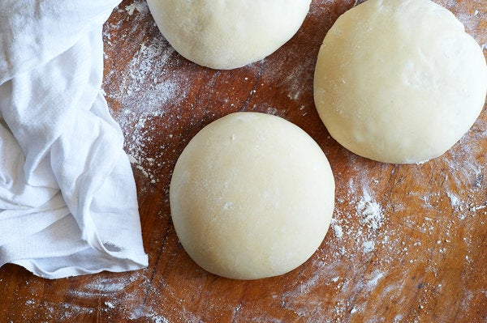

Pizza Dough Recipe

Description
You don't need to be a home cook to make your own pizza. In this recipe I teach how to make two 12-inch pizza dough
Ingredients
- 153grams 00 flour (1 cup plus 1 tablespoon)
- 153grams all-purpose flour (1 cup plus 1 tablespoon and 2 teaspoons)
- 8grams fine sea salt (1 teaspoon)
- 2grams active dry yeast (¾ teaspoon)
- 4grams extra-virgin olive oil (1 teaspoon)
Steps
- In a large mixing bowl, combine flours and salt.
- In a small mixing bowl, stir together 200 grams (a little less than 1 cup) lukewarm tap water, the yeast and the olive oil, then pour it into flour mixture. Knead with your hands until well combined, approximately 3 minutes, then let the mixture rest for 15 minutes.
- Knead rested dough for 3 minutes. Cut into 2 equal pieces and shape each into a ball. Place on a heavily floured surface, cover with dampened cloth, and let rest and rise for 3 to 4 hours at room temperature or for 8 to 24 hours in the refrigerator. (If you refrigerate the dough, remove it 30 to 45 minutes before you begin to shape it for pizza.)
- To make pizza, place each dough ball on a heavily floured surface and use your fingers to stretch it, then your hands to shape it into rounds or squares. Top and bake.
Go Back Home